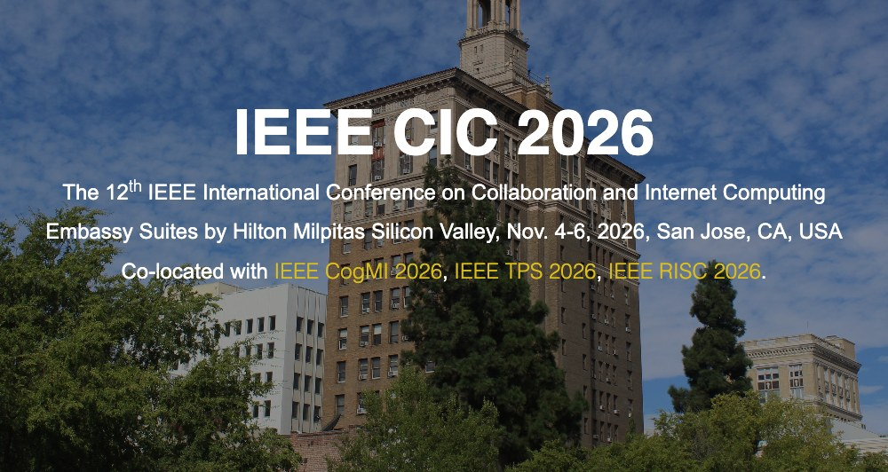
IEEE CIC 2026
12th IEEE International Conference on Collaboration and Internet Computing
Visit conference: IEEE CIC 2026Research conversations, community milestones,
and education beyond the lab.
Try a different search or choose another category.
Four co-located IEEE conferences
San Jose, California · Embassy Suites by Hilton Milpitas Silicon Valley

12th IEEE International Conference on Collaboration and Internet Computing
Visit conference: IEEE CIC 2026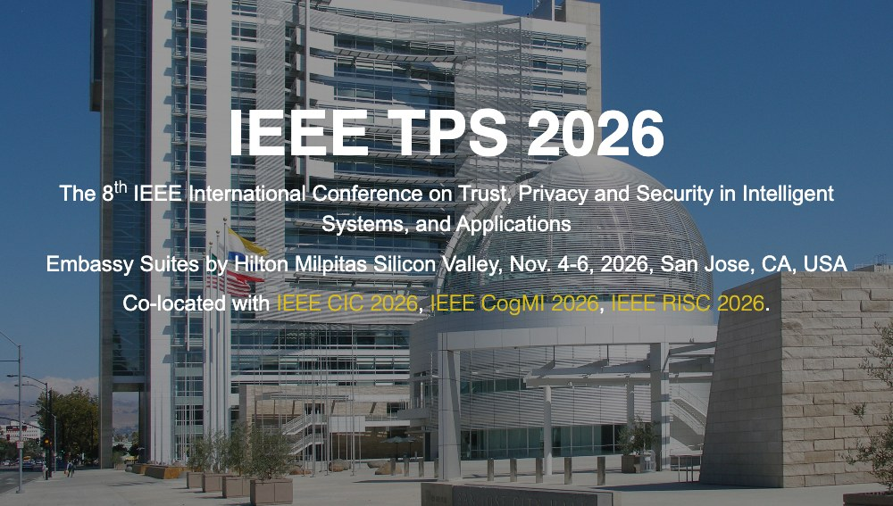
8th IEEE International Conference on Trust, Privacy and Security in Intelligent Systems and Applications
Visit conference: IEEE TPS 2026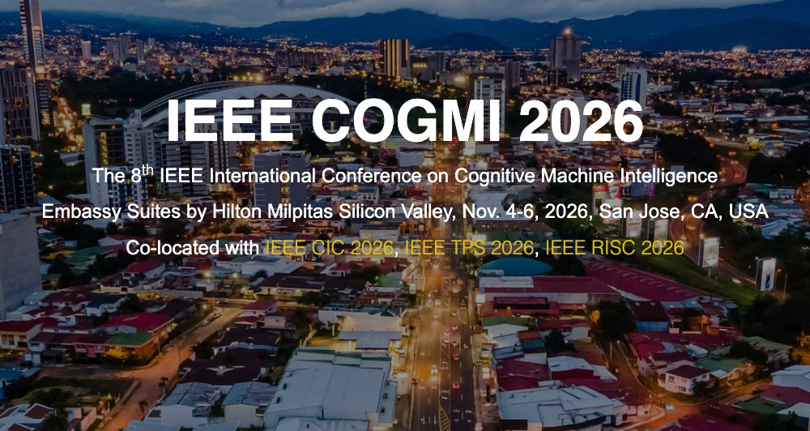
8th IEEE International Conference on Cognitive Machine Intelligence
Visit conference: IEEE CogMI 2026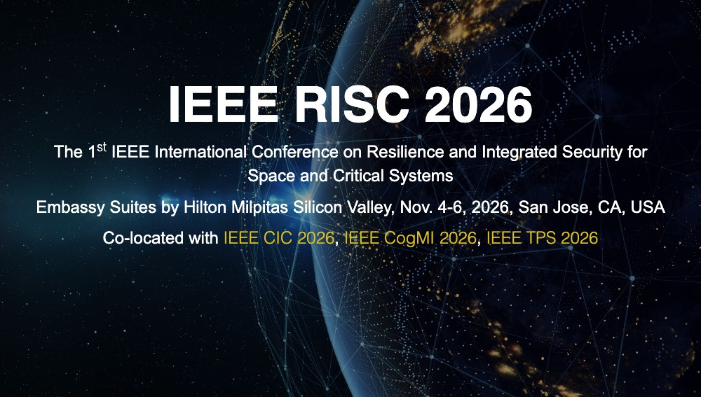
1st IEEE International Conference on Resilience and Integrated Security for Space and Critical Systems
Visit conference: IEEE RISC 2026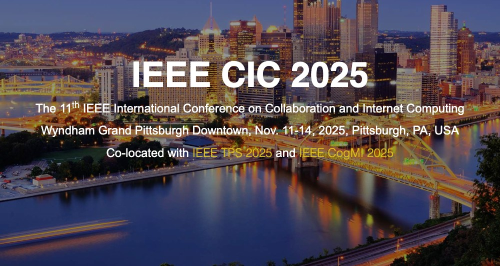
11th IEEE International Conference on Collaboration and Internet Computing
IEEE CIC has been conceived as the key multidisciplinary venue to serve as a premier international forum for discussion among academic and industrial researchers, practitioners, and students interested in Internet technologies, applications and services, collaborative networking, technology and systems, and applications.
Visit conference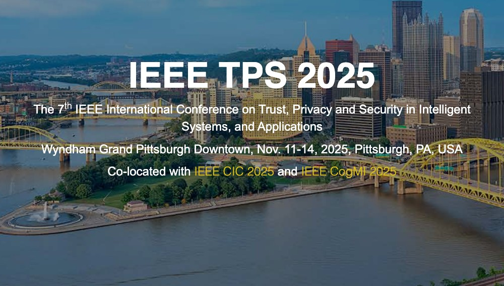
7th IEEE International Conference on Trust, Privacy and Security in Intelligent Systems, and Applications
IEEE TPS-ISA is an international multidisciplinary forum for presentation of state-of-the art innovations, and discussion among academic, industrial researchers, and practitioners on issues related to trust, privacy and security in emerging smart and intelligent systems and applications.
Visit conference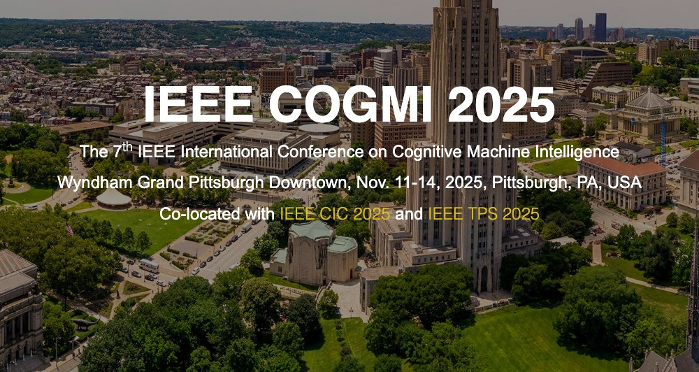
7th IEEE International Conference on Cognitive Machine Intelligence
The cognitive machine intelligence (CogMI) is creating unprecedented opportunities for impactful scientific innovations and societal transformations by significantly augmenting the human ability for problem solving and rapid decision making in terms of speed, precision and variety, while fostering innovations in all our human endeavors.
Visit conference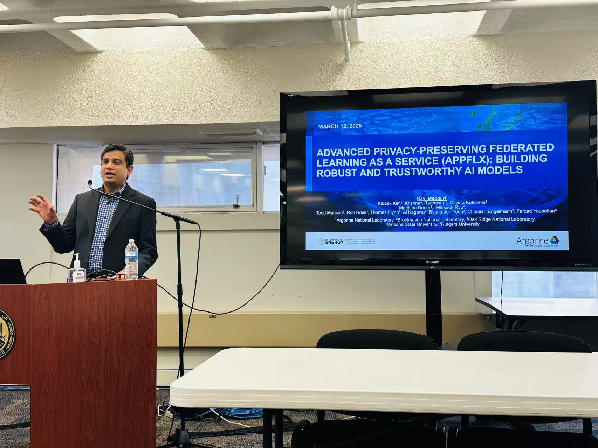
Distinguished LERSAIS and Pitt Cyber Seminar
Conducting secure privacy-preserving federated learning (PPFL) experiments that leverage large-scale, high-performance computational resources across distributed sites often demands technical capabilities beyond the reach of many organizations. To lower the barrier to entry for PPFL and empower domain experts in large institutions to utilize federated learning (FL), we developed Advanced Privacy-Preserving Federated Learning as a Service (APPFLx). APPFLx simplifies cross-silo PPFL through an intuitive web interface for managing, deploying, analyzing, and visualizing FL experiments.
Read the original story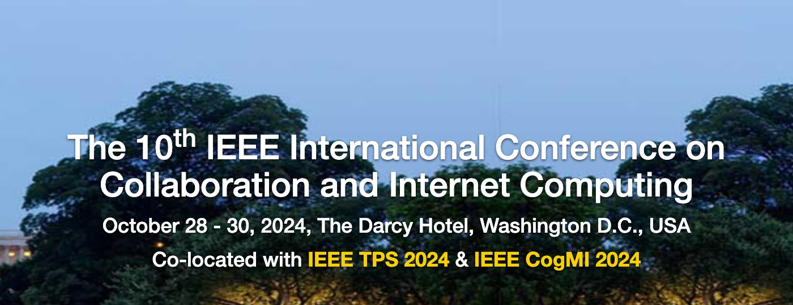
10th IEEE International Conference on Collaboration and Internet Computing
Held at The Darcy Hotel in Washington, D.C. Collaboration technologies, Internet computing, and connected systems across organizations and disciplines.
Visit conference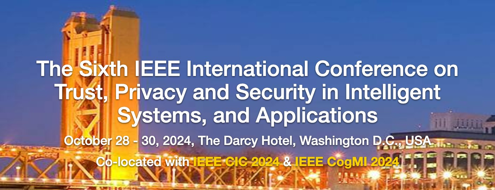
6th IEEE International Conference on Trust, Privacy and Security in Intelligent Systems, and Applications
Held at The Darcy Hotel in Washington, D.C. Trust, privacy, and security in intelligent systems, with research spanning AI, IoT, and emerging computing platforms.
Visit conference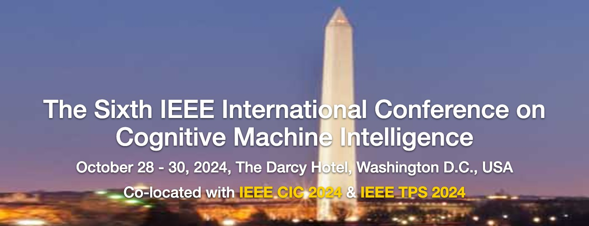
6th IEEE International Conference on Cognitive Machine Intelligence
Held at The Darcy Hotel in Washington, D.C. Cognitive machine intelligence and its foundations, exploring how AI supports human problem solving and decision making.
Visit conference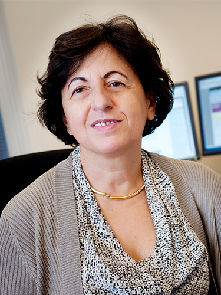
Distinguished LERSAIS and Pitt Cyber Seminar
Cellular network security is more critical than ever, given the increased complexity of these networks and the numbers of applications that depend on them, including telehealth, remote education, ubiquitous robotics and autonomous vehicles, smart cities, and Industry 4.0.
Read the original story
LERSAIS Faculty Run GenCyber Camp for High School Teachers
Professor James Joshi and LERSAIS faculty hosted a GenCyber Camp for high school teachers, providing essential cybersecurity education resources and training. The camp focused on integrating cybersecurity concepts into various high school curricula and equipping teachers with tools to inspire the next generation of cybersecurity professionals.
Read the original storyResearch & collaboration
For questions about our work, doctoral study, or opportunities to collaborate with LERSAIS.
Contact the lab